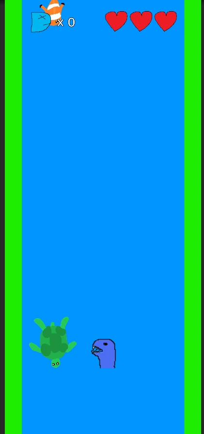
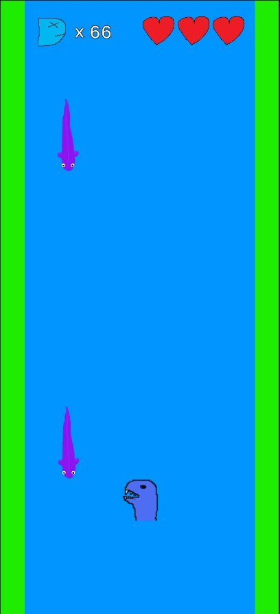
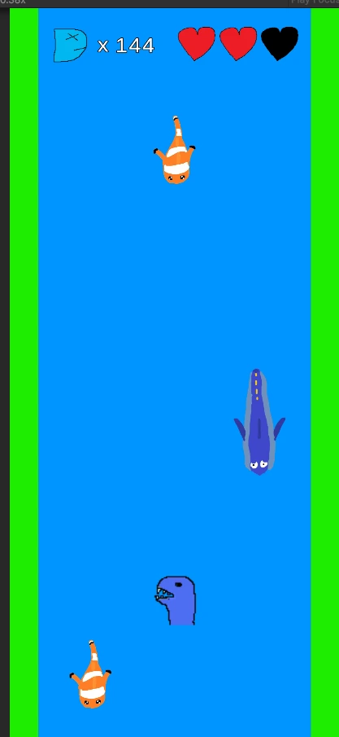
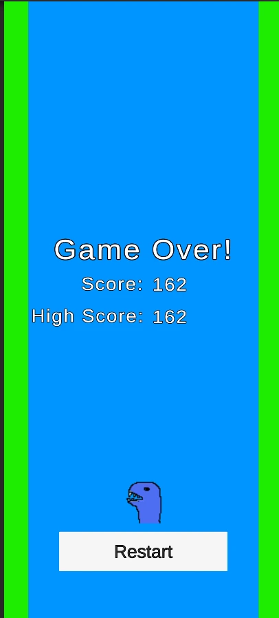

Sharkbait
Conor Kirkby




Click to Enlarge
Project description
Sharkbait is a small mobile game I have personally developed, the objective of the game is incredibly simple, eat the fish as they flow down the river, however you must watch out, the turtles are too hard to eat and you will get hurt and lose a life if you eat one, and there are poisonous eels who will make your stomach churn and you will lose score if you eat one.
This game includes:
- Four different fish to catch or avoid:
- Small Fish - Gives 1 point
- Big Fish - Gives 3 points
- Turtle - Player loses a life
- Eel - Player loses score
- A scalable difficulty system where the fish get faster and spawn in decreased intervals the more score you get.
- A simple control system.
Project Contribution
2025
Lead Developer
- What I learned:
- How to use Unity's andriod SDK.
- How to display and port unity APK projects to a mobile device.
- A good idea of what performance is like on mobile devices and how to take that into consideration.
- A good refresher and boost on C#.
- What development looks like for mobile games.
- How to use splines in Unity.
- What I contributed:
- Developed a chance system with weights to take entities from an object pool and set them on the spline path
- Developed a difficulty system to mimic a curve and using modifiers
- Used splines to develop a lane system
- Created the UI system to track score, high score and lives
- Created a health system that uses simple lives
- Created configurations that allow for customisable fish
Bio
I made this project mainly as a way to test how mobile development works with Unity as I have never done such a thing before and really wanted to learn. I had such fun making it however that I made a small game out of it. The idea was mainly inspired by a minigame present in the Jak and Daxter: Precursor Legacy game made by Naughty dog where fish float down a river and you have to catch them with a fishing rod. I loved that growing up and while I couldnt perfectly recreate that, I had fun with the concept!
The game is simple, the are created using an object pool offscreen and then are chosen at random in intervals to be activated and use the spline to simulate floating down the river. If the player hits it, it will check the configuration of the fish and decide whether to add score, take score or take a life. If the player misses it, it will go underneath and hit a different collision profile which will return the fish to the object pool.
Using a little maths, I created a mimic difficulty curve that increases or decreases as the player's score increases. This directly affects a modifier that is in use with both the spawn interval and the speed of the spline. This way the speed increases as the game goes on and simulates increased difficulty, capping at a specific amount.
It was so much fun to see something I have created being put on my personal phone, it was a different feeling entirely then on PC and having something I can show people or just play on the train is really great. It definitly needs some proper artwork but I love what I have made.